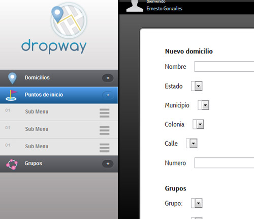
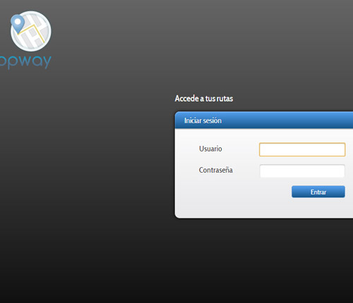
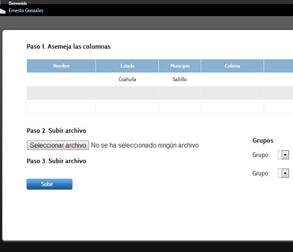

<section class="contport">
    <div id="imac" class="flexslider">
        <ul class="slides">
            <li></li>
            <li></li>
            <li></li>
        </ul>    
    </div>
    <section id="textopor">
        <section id="centexpor">
        <h1>Dropway</h1>
        <article>
            Diseño de la interfaz de usuario para el sistema en linea dropway.
        </article>
        </section>
    </section>
    <div  class="cerrarwebxx" id="cerrarwebpor"></div>
</section>
<script>
  $('.flexslider').flexslider({
    animation: "slide"
  });
    $('#cerrarwebpor').click(function(){
        $('#web1').removeClass('aparecer');
        $('#web1').removeClass('mover');
    });
</script>